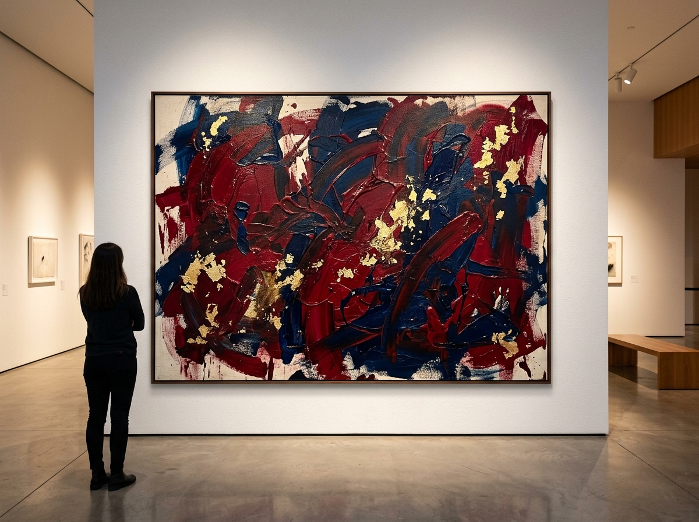

Studio visits & process
First sketches, prepared canvases, casting, armatures and the decisions inside a practice.
Independent art journal · Global awards
For the makers who give form to a feeling. A new home for contemporary painting, sculpture and radical material practice.
Enter the journal↓Volume 08 — Material Intelligence
Editorially independent since 2024
AURELIA keeps the conversation close to the studio: to the doubt, the material, the obsessive return. We publish artists whose work gives contemporary life a new surface.
Discover our philosophy →
Human-made. Artist-first.
Globally minded.
The current issue
VOL. 08 / 2026
A meditation on surface, tactility, and the poetic charge of things made slowly. Featuring 28 artists working across painting, clay, fibre and cast metal.
Read the issue ↗
Entries now open
An anonymous, two-stage jury for artists working in 2D, sculpture and mixed media.
Enter the awards ↗Volume 08 · Material Intelligence
Every issue pairs deep studio visits with practical, independent editorial: material research, copyright and contract guidance, art books and the quieter realities of a working practice.
First sketches, prepared canvases, casting, armatures and the decisions inside a practice.
Pigments, clay, stone, metalwork and archival methods that let work endure.
Copyright, consignment, provenance and art-transport advice for independent artists.
A small selection of artists who changed the way we look

Elena Marchetti · Oil on canvas

James Okonkwo · Patinated bronze

Marceline Ro · Mixed media
In the room
We make physical showcases with galleries and institutions that give artists, ideas and material their full scale.
12–30 November 2026
The Foundry, London
3–14 February 2027
K47, Berlin
8–19 April 2027
Kiyosumi Atelier, Tokyo

The AURELIA standard
Full authorship Artists always retain 100% of their intellectual property.
Human touch We champion authentic painting, sculpture and physical work.
Thoughtful critique Every submission is reviewed by working specialists.
Open call · Volume 09
For the next issue, “After Image”, we welcome visual portfolios, single artworks and critical writing that considers memory, trace, repair and atmosphere.
Start a submission ↗5–10 related works, a 200–300 word statement and bio.
One work of exceptional depth, with full technical details.
800–1,500 words on art, process, materials or the artist's life.
From our artists
“AURELIA feels less like an award and more like being invited into a serious conversation.”

The next edition begins with you
editorial@aurelia.art · awards@aurelia.art
Start a submission ↗